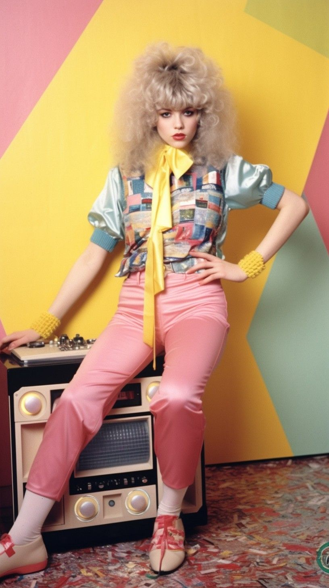
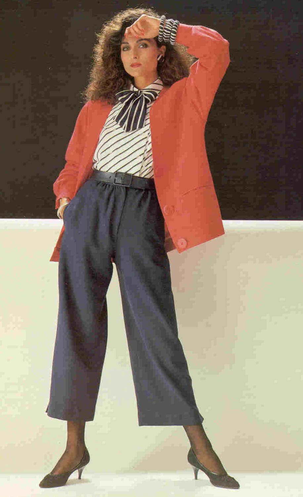
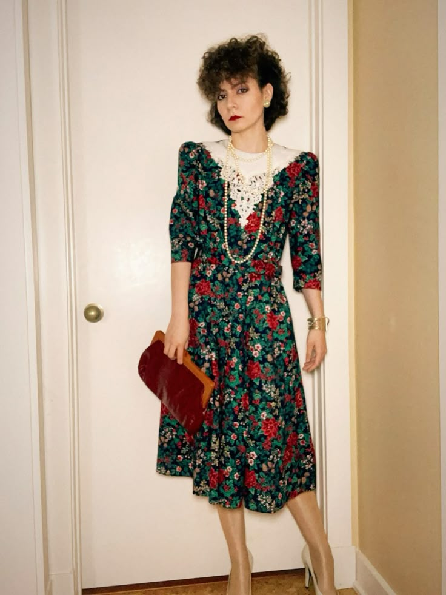
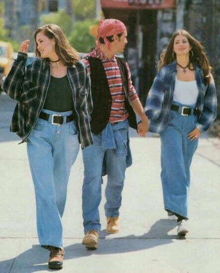
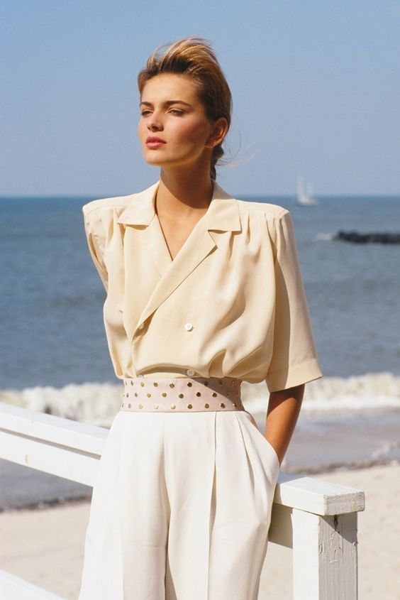
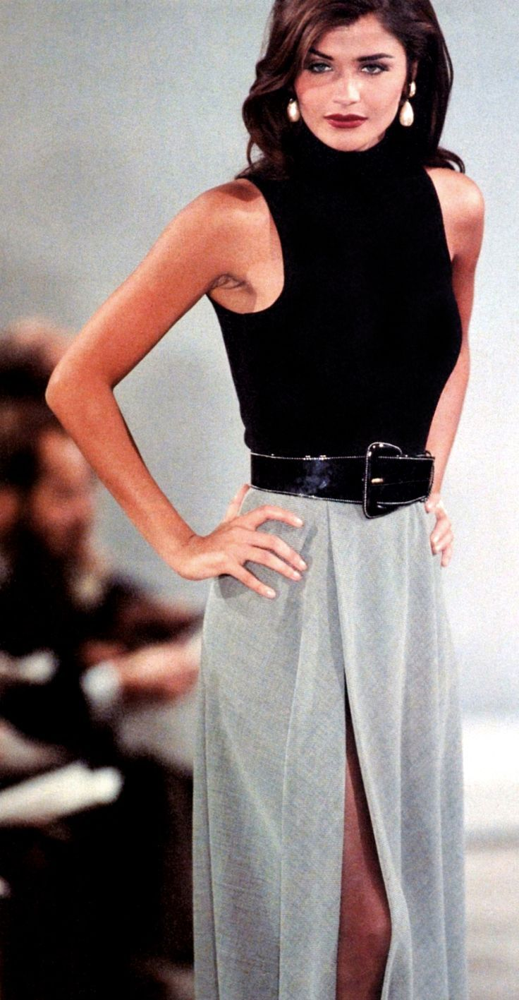

Мода — это не просто одежда, обувь или аксессуары, а отражение культурных, социальных и
экономических
процессов в обществе. Она помогает людям самовыражаться, формирует стиль жизни и влияет на выбор
одежды,
обуви и аксессуаров. Модные тенденции — это направления, которые становятся популярными в
определённый
период времени и быстро меняются, отражая актуальные вкусы и интересы людей.
Тенденции формируются под влиянием культуры, искусства, социальных изменений и технологий. Фильмы,
музыка и современное искусство вдохновляют дизайнеров на создание новых коллекций, а социальные сети
и
инфлюенсеры помогают распространять популярные образы. Экологические проблемы и устойчивое
производство
также влияют на появление новых трендов, направленных на переработку материалов и минимизацию
отходов.
Модные тенденции бывают классическими, сезонными, экспериментальными и устойчивыми. Классика
остаётся
актуальной годами, сезонные тренды появляются на короткий период, экспериментальные сначала кажутся
экстравагантными, а затем становятся массовыми, а устойчивая мода акцентирует внимание на
экологичности.
Следить за модой важно, чтобы самовыражаться, выглядеть современно и быть частью общества. Мода —
это
культурное явление, отражающее ценности, вкусы и идеи времени.



80-х годов
Мода 80-х годов была яркой, дерзкой и экстравагантной. Основными тенденциями
стали пышные плечи, облегающие платья и блейзеры с акцентом на силуэт, яркие неоновые цвета и смелые
принты. Популярны были джинсовые куртки, лосины, спортивные костюмы, свитеры с крупной вязкой и
массивные аксессуары, такие как крупные серьги, браслеты и ремни. В одежде ощущалось влияние диско, рок-
и поп-культуры, а видеоклипы на MTV формировали визуальный стиль молодежи. Также в тренде были прически
с объемом и яркий макияж с акцентом на глаза и губы.



90-х годов
Мода 90-х отличалась минимализмом, расслабленностью и элементами уличного
стиля. Появились джинсы с высокой талией, джинсовые комбинезоны, фланелевые рубашки в клетку, простые
футболки и майки с логотипами. Кожаные куртки, кеды и грубая обувь были популярны среди молодежи.
Влияние гранж-культуры сделало стиль более свободным и непринужденным: рваные джинсы, oversized-свитеры,
фланель и многослойность. Женская мода также включала мини-юбки, топы с бретельками и платки на голову.
Мода 2000-х годов была экспериментальной и яркой. В тренде оказались брюки с
заниженной талией, джинсовые юбки, блестящие ткани, яркие принты, футболки с пайетками, большие сумки и
обувь на платформе. Популярными стали элементы поп-культуры и хип-хопа: спортивные костюмы, бейсболки,
массивные цепи и логотипы известных брендов. В этот период также активно использовались аксессуары —
очки с цветными линзами, крупные ремни, украшения из пластика и металла. Прически часто отличались
гладкостью или ярким мелированием, макияж — блеском для губ и яркими тенями.
Мода 2010-х годов смещается к сочетанию стиля и комфорта. В тренде оказались
леггинсы, сникеры, oversize-свитеры и футболки, спортивная одежда как повседневный стиль, кроссовки на
платформе, пастельные и нейтральные оттенки. Появился тренд на минимализм и монохромные образы, а
социальные сети и блогеры активно формировали вкус молодежи. Популярность приобрели также винтажные вещи
и ретро-стиль: джинсы mom-fit, футболки с принтами 80-90-х, сумки через плечо и крупные очки.
Современные модные тенденции делают акцент на устойчивую моду, экологичные
материалы, этичное производство, индивидуальность и комфорт. В тренде унисекс-стиль, многослойные
образы, винтажные и кэжуал-комбинации. Популярны спортивная одежда и обувь, удобные кроссовки, а также
яркие и необычные аксессуары, которые делают образ выразительным. Люди всё чаще выбирают вещи, которые
можно носить долго, сочетать разными способами и при этом оставаться стильными. Важную роль играет
осознанность: модные бренды предлагают переработанные ткани, минимализм и одежду, которую легко
сочетать, чтобы сократить потребление и снизить влияние на окружающую среду.